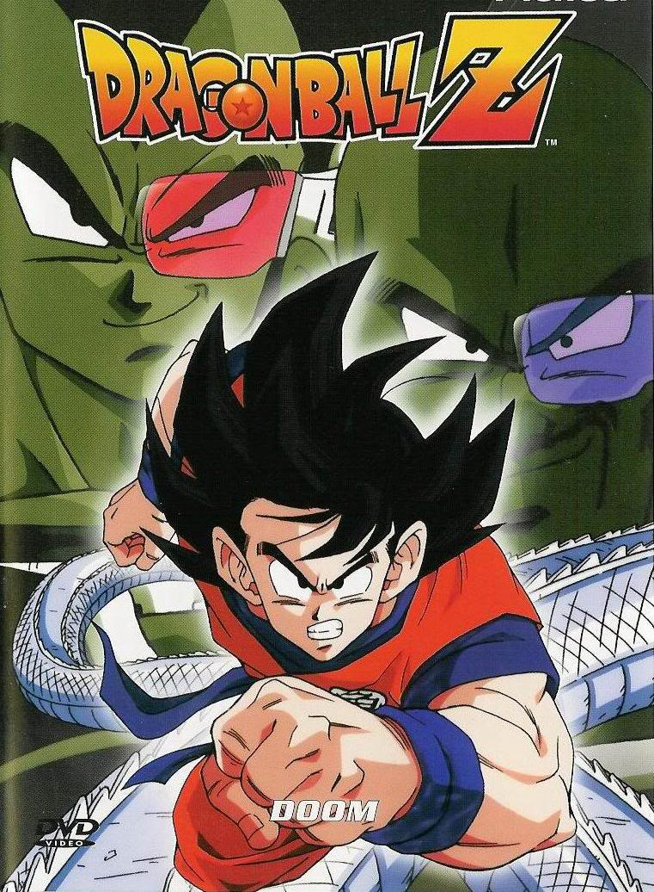
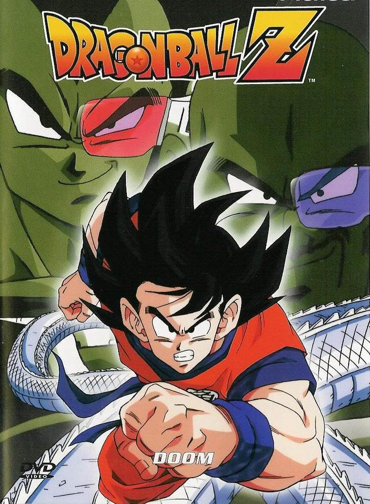

LILLIANA KOLLER
Summary
I am going to UC Berkeley this fall, and I plan on double majoring in CS and Classics. I have played piano for about ten years, and I also enjoy reading, sleeping, eating, anime, YouTube, and gaming.
I'm a terrible gamer, so I spend most of my time watching people like Markiplier and Jacksepticeye on YouTube. My favorite game is Undertale, but I also have a game I enjoy called Gmod (Garry's Mod).
I also like to make bad puns, and I am very good at drawing very bad doodles.
Hometown
Escalon, California
University
UC Berkeley
Other Profiles
My Favorite Animes
Honestly, I can't really list all of them, because there's so much anime I have seen that I love,
and there's so much more that I haven't even seen yet. So here's a list of a few I enjoy.
 
